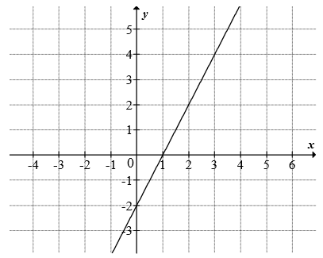
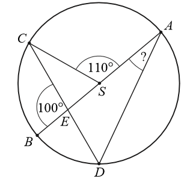
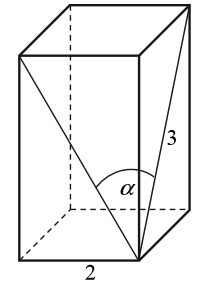
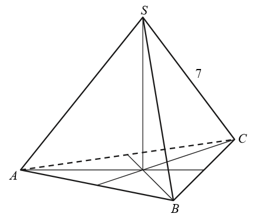

Matura 2016 sierpień
Suma pięciu kolejnych liczb całkowitych jest równa \(195\). Najmniejszą z tych
liczb jest
A.\( 37 \)
B.\( 38 \)
C.\( 39 \)
D.\( 40 \)
A
Buty, które kosztowały \(220\) złotych, przeceniono i sprzedano za \(176\) złotych.
O ile procent obniżono cenę butów?
A.\( 80 \)
B.\( 20 \)
C.\( 22 \)
D.\( 44 \)
B
Liczba \(\frac{4^5\cdot 5^4}{20^4}\) jest równa
A.\( 4^4 \)
B.\( 20^{16} \)
C.\( 20^5 \)
D.\( 4 \)
D
Liczba \(\frac{\log_3729}{\log_636}\) jest równa
A.\( \log_6693 \)
B.\( 3 \)
C.\( \log_{\frac{1}{2}}\frac{81}{4} \)
D.\( 4 \)
B
Najmniejszą liczbą całkowitą spełniającą nierówność \(\frac{x}{5}+\sqrt{7}\gt 0\)
jest
A.\( -14 \)
B.\( -13 \)
C.\( 13 \)
D.\( 14 \)
B
Funkcja kwadratowa jest określona wzorem \(f(x)=(x-1)(x-9)\). Wynika stąd, że
funkcja \(f\) jest rosnąca w przedziale
A.\( \langle 5,+\infty ) \)
B.\( (-\infty ,5\rangle \)
C.\( (-\infty ,-5\rangle \)
D.\( \langle -5,+\infty ) \)
A
Na rysunku przedstawiony jest fragment wykresu funkcji liniowej \(f\), przy czym
\(f(0)=-2\) i \(f(1)=0\). 
Wykres funkcji \(g\) jest symetryczny do wykresu funkcji \(f\) względem początku układu
współrzędnych. Funkcja \(g\) jest określona wzorem
A.\( g(x)=2x+2 \)
B.\( g(x)=2x-2 \)
C.\( g(x)=-2x+2 \)
D.\( g(x)=-2x-2 \)
A
Pierwszy wyraz ciągu geometrycznego jest równy \(8\), a czwarty wyraz tego ciągu
jest równy \((-216)\). Iloraz tego ciągu jest równy
A.\( -\frac{224}{3} \)
B.\( -3 \)
C.\( -9 \)
D.\( -27 \)
B
Kąt \(\alpha \) jest ostry i \(\sin \alpha =\frac{4}{5}\). Wtedy wartość wyrażenia
\(\sin \alpha -\cos \alpha \) jest równa
A.\( \frac{1}{5} \)
B.\( \frac{3}{5} \)
C.\( \frac{17}{25} \)
D.\( \frac{1}{25} \)
A
Jeśli funkcja kwadratowa \(f(x)=x^2+2x+3a\) nie ma ani jednego miejsca zerowego, to
liczba \(a\) spełnia warunek
A.\( a\lt -1 \)
B.\( -1\le a\lt 0 \)
C.\( 0\le a\lt \frac{1}{3} \)
D.\( a\gt \frac{1}{3} \)
D
Dla każdej liczby całkowitej dodatniej \(n\) suma \(n\) początkowych wyrazów ciągu
arytmetycznego \((a_n)\) jest określona wzorem \(S_n=2n^2+n\). Wtedy wyraz \(a_2\) jest równy
A.\( 3 \)
B.\( 6 \)
C.\( 7 \)
D.\( 10 \)
C
Układ równań \(\begin{cases} 2x-3y=5 \\ -4x+6y=-10 \end{cases} \)
A.nie ma rozwiązań.
B.ma dokładnie jedno rozwiązanie.
C.ma dokładnie dwa rozwiązania.
D.ma nieskończenie wiele rozwiązań.
D
Liczba \(\frac{|3-9|}{-3}\) jest równa
A.\( 2 \)
B.\( -2 \)
C.\( 0 \)
D.\( -4 \)
B
Na której z podanych prostych leżą wszystkie punkty o współrzędnych \((m-1,2m+5)\),
gdzie \(m\) jest dowolną liczbą rzeczywistą?
A.\( y=2x+5 \)
B.\( y=2x+6 \)
C.\( y=2x+7 \)
D.\( y=2x+8 \)
C
Kąt rozwarcia stożka ma miarę \(120^\circ \), a tworząca tego stożka ma długość
\(6\). Promień podstawy stożka jest równy
A.\( 3 \)
B.\( 6 \)
C.\( 3\sqrt{3} \)
D.\( 6\sqrt{3} \)
C
Wartość wyrażenia \((\operatorname{tg} 60^\circ +\operatorname{tg} 45^\circ
)^2-\sin 60^\circ \) jest równa
A.\( 2-\frac{3\sqrt{3}}{2} \)
B.\( 2+\frac{\sqrt{3}}{2} \)
C.\( 4-\frac{\sqrt{3}}{2} \)
D.\( 4+\frac{3\sqrt{3}}{2} \)
D
Dany jest walec, w którym promień podstawy jest równy \(r\), a wysokość walca jest
od tego promienia dwa razy większa. Objętość tego walca jest równa
A.\( 2\pi r^3 \)
B.\( 4\pi r^3 \)
C.\( \pi r^2(r+2) \)
D.\( \pi r^2(r-2) \)
A
Przekątne równoległoboku mają długości \(4\) i \(8\), a kąt między tymi przekątnymi
ma miarę \(30^\circ \). Pole tego równoległoboku jest równe
A.\( 32 \)
B.\( 16 \)
C.\( 12 \)
D.\( 8 \)
D
Punkty \(A\), \(B\), \(C\) i \(D\) leżą na okręgu o środku \(S\). Cięciwa \(CD\)
przecina średnicę \(AB\) tego okręgu w punkcie \(E\) tak, że \(|\sphericalangle BEC|=100^\circ \).
Kąt środkowy \(ASC\) ma miarę \(110^\circ \) (zobacz rysunek).  Kąt wpisany \(BAD\) ma miarę
A.\( 15^\circ \)
B.\( 20^\circ \)
C.\( 25^\circ \)
D.\( 30^\circ \)
C
Okręgi o środkach \(S_1=(3,4)\) oraz \(S_2=(9,-4)\) i równych promieniach są
styczne zewnętrznie. Promień każdego z tych okręgów jest równy
A.\( 8 \)
B.\( 6 \)
C.\( 5 \)
D.\( \frac{5}{2} \)
C
Podstawą graniastosłupa prawidłowego czworokątnego jest kwadrat o boku długości
\(2\), a przekątna ściany bocznej ma długość \(3\) (zobacz rysunek). Kąt, jaki tworzą przekątne
ścian bocznych tego graniastosłupa wychodzące z jednego wierzchołka, ma miarę \(\alpha \).  Wtedy wartość \(\sin
\frac{\alpha }{2}\) jest równa
A.\( \frac{2}{3} \)
B.\( \frac{\sqrt{7}}{3} \)
C.\( \frac{\sqrt{7}}{7} \)
D.\( \frac{\sqrt{2}}{3} \)
D
Różnica liczby krawędzi i liczby wierzchołków ostrosłupa jest równa \(11\).
Podstawą tego ostrosłupa jest
A.dziesięciokąt.
B.jedenastokąt.
C.dwunastokąt.
D.trzynastokąt.
C
Jeżeli do zestawu czterech danych: \(4, 7, 8, x\) dołączymy liczbę \(2\), to
średnia arytmetyczna wzrośnie o \(2\). Zatem
A.\( x=-51 \)
B.\( x=-6 \)
C.\( x=10 \)
D.\( x=29 \)
A
Ile jest wszystkich dwucyfrowych liczb naturalnych podzielnych przez \(3\)?
A.\( 12 \)
B.\( 24 \)
C.\( 29 \)
D.\( 30 \)
D
Doświadczenie losowe polega na rzucie dwiema symetrycznymi monetami i sześcienną
kostką do gry. Prawdopodobieństwo zdarzenia polegającego na tym, że wynikiem rzutu są dwa orły i
sześć oczek na kostce, jest równe
A.\( \frac{1}{48} \)
B.\( \frac{1}{24} \)
C.\( \frac{1}{12} \)
D.\( \frac{1}{3} \)
B
Rozwiąż nierówność \(3x^2-6x\ge (x-2)(x-8)\)
\(x\in (-\infty ,-4\rangle \cup \langle 2,+\infty )\)
Jeżeli do licznika pewnego nieskracalnego ułamka dodamy \(32\), a mianownik
pozostawimy niezmieniony, to otrzymamy liczbę \(2\). Jeżeli natomiast od licznika i od mianownika
tego ułamka odejmiemy \(6\), to otrzymamy liczbę \(\frac{8}{17}\). Wyznacz ten ułamek.
\(\frac{14}{23}\)
Wykaż, że jeżeli liczby rzeczywiste \(a, b, c\) spełniają warunek \(abc=1\), to
\[a^{-1}+b^{-1}+c^{-1}=ab+ac+bc\]
Funkcja kwadratowa jest określona wzorem \(f(x)=x^2-11x\). Oblicz najmniejszą
wartość funkcji \(f\) w przedziale \(\langle -6,6\rangle \).
\(-30\frac{1}{4}\)
W trapezie \(ABCD\) o podstawach \(AB\) i \(CD\) przekątne \(AC\) oraz \(BD\)
przecinają się w punkcie \(S\). Wykaż, że jeżeli \(|AS|=\frac{5}{6}|AC|\), to pole trójkąta \(ABS\)
jest \(25\) razy większe od pola trójkąta \(DCS\).
Ciąg arytmetyczny \((a_n)\) określony jest wzorem \(a_n=2016-3n\), dla \(n\ge 1\).
Oblicz sumę wszystkich dodatnich wyrazów tego ciągu.
\(676368\)
Na rysunku przedstawione są dwa wierzchołki trójkąta prostokątnego \(ABC\):
\(A=(-3,-3)\) oraz \(C=(2,7)\) oraz prosta o równaniu \(y=\frac{3}{4}x-\frac{3}{4}\), zawierająca
przeciwprostokątną \(AB\) tego trójkąta.  Oblicz współrzędne wierzchołka \(B\) tego trójkąta i długość odcinka \(AB\).
Oblicz współrzędne wierzchołka \(B\) tego trójkąta i długość odcinka \(AB\).
Oblicz współrzędne wierzchołka \(B\) tego trójkąta i długość odcinka \(AB\). \(B=\left(7, 4\frac{1}{2}\right)\) oraz \(|AB|=12{,}5\)
Trójkąt równoboczny \(ABC\) jest podstawą ostrosłupa prawidłowego \(ABCS\), w
którym ściana boczna jest nachylona do płaszczyzny podstawy pod kątem \(60^\circ \), a krawędź
boczna ma długość \(7\) (zobacz rysunek). Oblicz objętość tego ostrosłupa. 
\(V=21\sqrt{7}\)
Ze zbioru siedmiu liczb naturalnych \(\{1, 2, 3, 4, 5, 6, 7\}\) losujemy dwie różne
liczby. Oblicz prawdopodobieństwo zdarzenia polegającego na tym, że większą z wylosowanych liczb
będzie liczba \(5\).
\(\frac{4}{21}\)